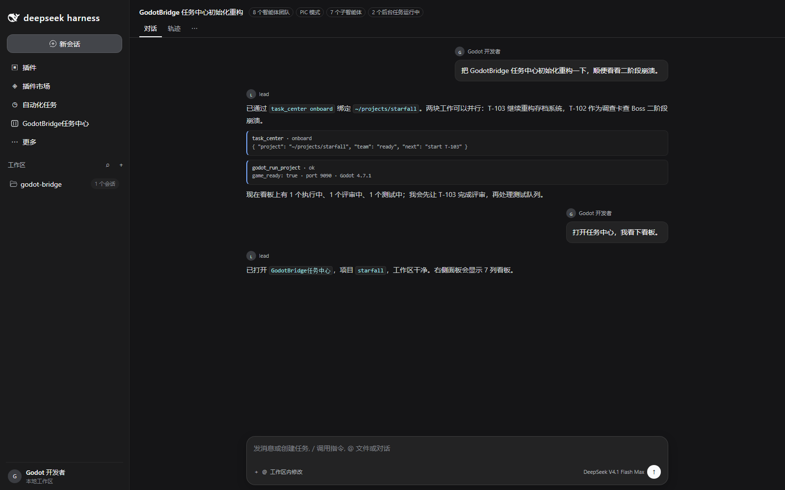
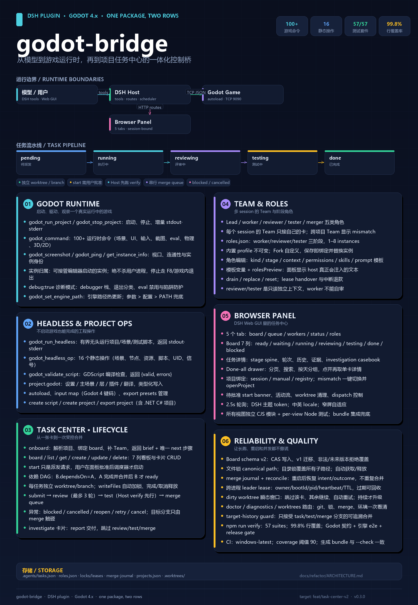

启动 / 接管
自动发现端口、接管编辑器实例、区分 plugin-managed 与 external，绝不误杀用户进程。
Bridge 直接驱动运行中的 Godot 游戏；Task Center 把实现、评审、测试、合并跑成可审计的流水线。17 个原生 godot_* 工具 + 项目任务中心，一个插件就能实现。
不把游戏塞进另一个协议栈。godot-bridge 直接说 McpInteractionServer 的 newline-delimited JSON，从 DSH 宿主里原生调用。
启动项目后自动等待 127.0.0.1:9090；如果游戏已经由编辑器启动，插件会接管现有实例，而不是再开一个。
godot_run_project 启动或接管，默认不带本地调试器，eval 可直接用godot_command 覆盖场景树、UI、输入、物理、动画、音频、截图等 100+ 命令godot_run_headless 通过 unconfined subprocess 跑场景、脚本和测试，绕开 shell 沙箱崩溃godot_headless_op 16 个静态操作：场景、资源、信号、脚本、UID// 启动或接管 Godot
godot_run_project {
project_path: "~/projects/starfall"
}
// 看当前场景
godot_command {
command: "get_scene_tree"
}
// 在游戏里跑 GDScript
godot_command {
command: "eval",
params: { code: "get_tree().paused" }
}自动发现端口、接管编辑器实例、区分 plugin-managed 与 external，绝不误杀用户进程。
场景树、节点属性、UI 元素、点击/按键、射线、动画、音频、序列化状态，一条 JSON 命令直达。
godot_screenshot 返回 base64 PNG；get_scene_tree / get_ui_elements 给出可操作的结构。
不需要运行游戏：创建/读取场景、挂脚本、资源、信号、UID、导出 MeshLibrary。
GDScript 编译检查、项目设置、autoload、输入映射、导出预设与 headless 导出。
启动走 unconfined subprocess；debug:true 只用于诊断，脚本错误返回 debuggerTrace 而不是挂死。
第二个组件行 godot-bridge/task-center：项目任务板、依赖派发、文件锁、角色系统，以及一个真正能跑完的评审 / 测试 / 合并流水线。
每张卡在自己的 git worktree 里执行。提交不是完成，评审不是自审，测试不是复述——每个阶段都有独立角色和可审计证据。

B.dependsOn=[A]：A 完成并合并后才派 Bkind:"investigate" 交付报告，不进入评审/测试/合并start 只是请求，面板批准后才真正派发一次 task_center { action: "onboard" } 解析项目、检查 git/Godot 标记、绑定看板，缺团队就补团队。
task_center { action: "onboard" }看板按优先级和依赖派发。每张卡先认领、拿文件锁、切 worktree，再交给 Team。
pending → running → reviewing
→ testing → done评审通过、Host 验证通过、tester 通过，才进入串行合并队列；目标移动就重建重测。
git worktree add .worktrees/T-103-2
branch task/T-103-2Bridge 工具、游戏命令、headless 操作、任务中心流水线，全部收在一张能力地图里。

打开原图 ↗godot-bridge 是标准 DSH bundle 模块。安装后 profile 会多出 tool-godot-bridge 行和任务中心组件行。
dsh plugin --profile web add github:Smalldy/godot-bridge
McpInteractionServer 时 godot_run_project 会自动安装task_center { action: "onboard" }start，看板开始派发